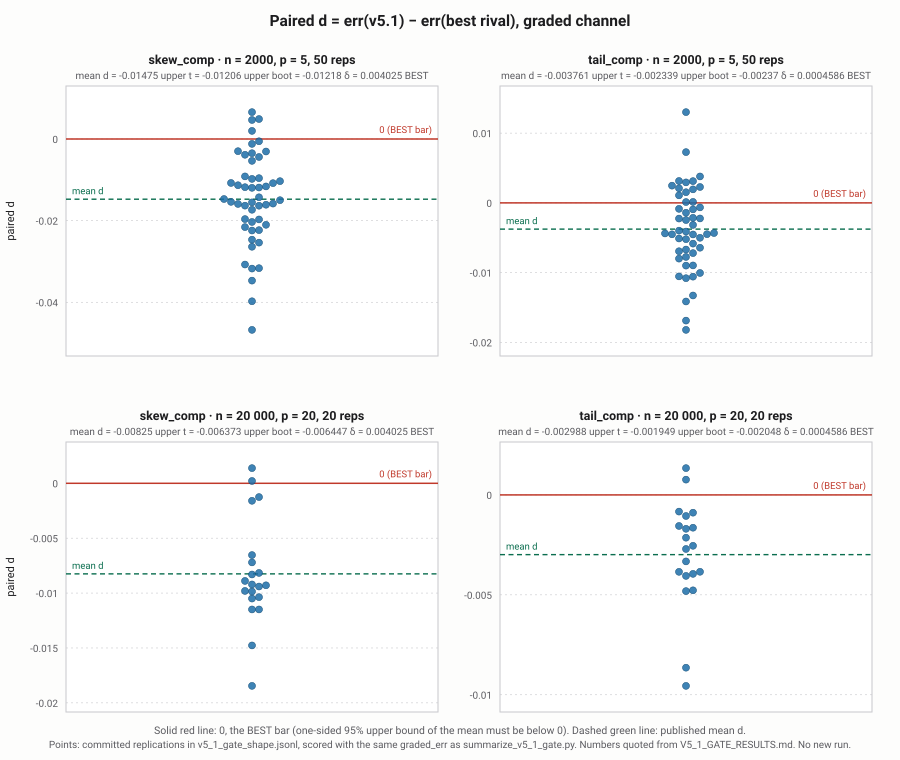

TRACE v5.1: splitting a change in distribution shape into composition and response
Working paper · opened 2026-11-09 ET · abstract, §3, §4 and the §5 figure filled in 2026-11-12 ET · source V5_1_working_paper.md · decision DECISION_2026-11-04.md (PR #37)
§1, §2 and the §5 discussion were filled in on 2026-11-10 from existing results and code only. The abstract, §3, §4 and the §5 figure were filled in on 2026-11-12, still from existing results only: the figure is drawn from the committed v5_1_gate_shape.jsonl by a deterministic script that runs no TRACE fit and touches no seed.
Abstract
When the distribution of an outcome changes between two periods A and B, part of the change comes from the inputs moving (composition) and part from the way the outcome responds to the inputs (response, also called structure). TRACE v5.1 splits the change in each L-moment of the outcome into these two pieces. It builds the four mixture counterfactual laws \(F_{[s,t]}(y)=E_{x\sim F_s}F_t(y\mid x)\) for \(s,t\in\{A,B\}\), with each period's conditional law given by an ordinary-least-squares location fit plus that period's empirical residual law, and takes the two-player Shapley split of the L-moment change. The fit is closed form and has no tunable parameters (PREREG_V5_1 §2). In a frozen, pre-registered gate on fresh seeds, v5.1 was BEST against the better of two paired rivals (DFL reweighting and CFM) in all four pure-composition cells and passed the role check in all four (V5_1_GATE_RESULTS.md). The simulator's mean is linear, so this result says nothing about non-linear means; a follow-up that tried curved means was pre-registered, run once, and parked (PARK_V5_2.md).
1. Problem
Decomposing a distribution shift's shape change (L-moments) into composition vs structure via a four-hybrid mixture and a two-player Shapley split (DECISION_2026-11-04.md, plan outline).
Motivation. Two samples are observed, period A and period B, each with inputs \(x\in\mathbb R^p\) and a scalar outcome \(y\). The outcome's distribution differs between the periods, and the question is why: because the inputs are distributed differently (composition), or because the outcome responds to the same inputs differently (response, also called structure). For the mean this is the classical two-way split. Here the target is the whole shape of the outcome law: its location, scale, skewness and tail weight, each split into a composition piece and a response piece that add up exactly to the observed change.
Notation. \(F_t(x)\) is the input law and \(F_t(y\mid x)\) the conditional outcome law in
period \(t\in\{A,B\}\). The mixture counterfactual with inputs from \(s\) and conditional law
from \(t\) is
\[
F_{[s,t]}(y)=E_{x\sim F_s}\,F_t(y\mid x),\qquad Q_{[s,t]}=F_{[s,t]}^{-1}\ \text{(left inverse)}.
\]
\(F_{[A,A]}\) and \(F_{[B,B]}\) are the two observed outcome laws; \(F_{[B,A]}\) and
\(F_{[A,B]}\) are the two counterfactuals ("B's inputs, A's response" and the reverse).
\(\lambda_r(F)\) is the \(r\)-th L-moment of a law, \(\lambda_r(F)=\int_0^1 Q(u)\,P^*_{r-1}(u)\,du\)
with \(P^*_{r-1}\) the shifted Legendre polynomial (crates/core/src/trace/v5/mixture.rs,
lmoments_from_cdf_grid). We write \(\lambda_{[s,t]}=\lambda(F_{[s,t]})\) for the vector of the
first \(K=4\) L-moments.
Relation to existing methods. \(F_{[s,t]}\) is the counterfactual distribution of
Chernozhukov, Fernández-Val and Melly (2013, Inference on Counterfactual Distributions,
Econometrica; cited in crates/core/src/trace/v5/mod.rs and
REFS.md). Their estimator (CFM, one of the two gate rivals) builds the
conditional law from distribution regression; v5.1 builds it from a location model plus an
empirical residual law (§2). The counterfactual \(F_{[B,A]}\) is also what DiNardo, Fortin and
Lemieux (1996) reweighting estimates: reweight the A sample by \(w(x)=dF_B(x)/dF_A(x)\). The
repository checks this equivalence on a discrete-input example, in Rust
(mixture_matches_dfl_reweighting in crates/core/src/trace/v5/explain.rs) and in Python
(test_mixture_matches_dfl_reweighting in tests/python/test_v5.py), and through the full
explain_v5 path with the booster location model
(explain_comp_matches_dfl_on_location_model). DFL reweighting is the second
gate rival. Both rivals are used only to produce L-moment splits on the same data and seeds
(benchmarks/shiftbench/sb_shape_readout.py); nothing from them is inside v5.1.
Why L-moments. L-moments (Hosking 1990, REFS.md) are linear in the
quantile function, so they are defined for any law with a finite mean, are less sensitive to
the extreme tail than ordinary moments, and can be computed exactly for the piecewise-linear
gridded laws used here. Linearity in \(Q\) also means that for a pure location family the shape
channels (\(\lambda_2\) and up) do not move with the location, which is what lets the mixing
check in mixing_residual_nonzero_while_barycenter_flat separate a mixture effect from a shift.
\(\lambda_1\) is the mean, \(\lambda_2\) a scale, and \(\lambda_3\), \(\lambda_4\) carry skewness
and tail weight; the gate grades \(\lambda_3\) on skew_comp and \(\lambda_4\) on tail_comp
(§4–5).
2. Method (TRACE_V5_1)
Quoted from the frozen method, PREREG_V5_1 §2:
- Per period \(t\in\{A,B\}\): \(\hat\mu_t(x)=\hat\beta_{0,t}+x^\top\hat\beta_t\), the least-squares fit of \(y\) on an intercept and all \(p\) columns of \(x\) (no penalty, no feature selection, no transforms). Residuals \(r_t=y-\hat\mu_t(x)\); residual law = empirical law of \(r_t\).
- Unchanged from v5 @
3d695bc: four hybrids \([A,A],[A,B],[B,A],[B,B]\) viamixture_cdf_location, 256-point support grid,n_quad = 64, exact L-moments of the gridded law, two-player Shapley split. - Implemented in the Rust core with a thin Python switch (no neural nets). The fit is closed form; there are no tunable parameters.
Implementation: TRACE_V5_1 = explain_v5(..., mean_model="ols") (PR #29), merge SHA 665939bd4aa78ffc7474b91d482d18ac0191d595. Code: explain.rs, v5.py.
Shapley split in full. Treat the change \(\lambda_{[B,B]}-\lambda_{[A,A]}\) (per L-moment)
as a two-player cooperative game with players c (switch inputs A→B) and s (switch the
conditional law A→B). The value of a coalition is the L-moment of the hybrid with the switched
parts taken from B:
\[
v(\varnothing)=\lambda_{[A,A]},\quad v(\{c\})=\lambda_{[B,A]},\quad
v(\{s\})=\lambda_{[A,B]},\quad v(\{c,s\})=\lambda_{[B,B]}.
\]
The Shapley value of a player averages its marginal contribution over the two orders in which
the players can join:
\[
\hat c=\tfrac12\big[(\lambda_{[B,A]}-\lambda_{[A,A]})+(\lambda_{[B,B]}-\lambda_{[A,B]})\big],\qquad
\hat s=\tfrac12\big[(\lambda_{[A,B]}-\lambda_{[A,A]})+(\lambda_{[B,B]}-\lambda_{[B,A]})\big].
\]
These are exactly the lsplit_comp and lsplit_struct formulas in
crates/core/src/trace/v5/explain.rs. Writing the interaction
\(I=\lambda_{[B,B]}-\lambda_{[B,A]}-\lambda_{[A,B]}+\lambda_{[A,A]}\),
\[
\hat c=(\lambda_{[B,A]}-\lambda_{[A,A]})+\tfrac I2,\qquad
\hat s=(\lambda_{[A,B]}-\lambda_{[A,A]})+\tfrac I2,
\]
so the split gives each one-at-a-time effect and shares the interaction equally; it does not
depend on which switch is applied first (order-free). Adding the two displays,
\[
\hat c+\hat s=\lambda_{[B,B]}-\lambda_{[A,A]}\qquad\text{(budget identity)},
\]
exactly, for every L-moment. The identity is algebraic, so it holds in floating point up to
rounding; it is tested in tests/python/test_v5.py (test_explain_v5_budget_is_exact) and in
the Rust tests mixing_residual_nonzero_while_barycenter_flat (tolerance \(10^{-12}\)) and
v5_1_pure_composition_shift (\(10^{-10}\)).
The four hybrids under v5.1. With \(\hat\mu_t\) the OLS fit of period \(t\) and
\(r_{t,j}=y_{t,j}-\hat\mu_t(x_{t,j})\) its residuals (\(j=1..n_t\)),
\[
\hat F_{[s,t]}(y)=\frac1{n_s n_t}\sum_{i=1}^{n_s}\sum_{j=1}^{n_t}\mathbf 1\{\hat\mu_t(x_{s,i})+r_{t,j}\le y\},
\]
i.e. B's (or A's) inputs pushed through period \(t\)'s fitted mean plus period \(t\)'s empirical
residual law (mixture_cdf_location, exact pair counting, no smoothing or subsampling). For
\([A,A]\) and \([B,B]\) this is the law of fitted value plus an independently re-drawn own
residual. Because the OLS fit includes an intercept, a common shift of all inputs changes no
fitted value, so centring the inputs (as the benchmark harness does) does not change the
output.
Grid and quadrature. One support grid is shared by the four hybrids: \(n_y=256\) evenly
spaced points on \([\ell,h]\), where \(\ell\) and \(h\) are the smallest and largest value of
fitted mean plus residual over the four hybrids, so the grid covers every hybrid's support
(support_grid). \(\hat F_{[s,t]}\) is evaluated exactly at each grid point and treated as
linear between grid points, with atoms at the two ends for any mass at or beyond them. The
L-moments of that law are computed exactly: on each linear piece \(Q\) is linear in \(u\), so
\(\int Q\,P^*_r\) has a polynomial integrand of degree \(r+1\le 4\) for \(K=4\), and the code
integrates each piece with a 4-point Gauss–Legendre rule, exact to degree 7
(lmoments_from_cdf_grid). The
\(n_{\text{quad}}=64\) Gauss–Legendre nodes on \((0,1)\) are used only for the reported quantile
curves \(Q_{[s,t]}\), the Lagrangian barycenter \(\bar Q_{[s,t]}(u)=\overline{\hat\mu}+Q_{r_t}(u)\),
and the mixing residual \(\lVert Q_{[s,t]}-\bar Q_{[s,t]}\rVert_{L^2(0,1)}\); they do not enter
\(\hat c\) or \(\hat s\).
3. Pre-registration history (failures kept)
| step | freeze | verdict | record |
|---|---|---|---|
| v4 | d50732f | Overall accuracy FAIL; coverage INCOMPLETE | V4_RESULTS.md |
| v5 first gate (binned mean booster) | bce021e | FAIL (n = 20 000 cells INCOMPLETE); kill rule applies, gate closed | V5_GATE1_RESULTS.md · page |
| v5 diagnosis | — | EXPLORATORY, no claim; spent dev seeds 9500–9549 only | V5_DIAGNOSIS.md |
| v5.1 (OLS location fit) | b33f507 | PASS: all four cells BEST, all role checks PASS | V5_1_GATE_RESULTS.md · page |
| v5.2 (curved means, spline) | df5aff8 | FAIL: curved-mean claim parked | PARK_V5_2.md · V5_2_GATE_RESULTS.md · page |
- v5 park: "its kill rule stands and the v5 first gate is closed" (PREREG_V5_1 header). There is no separate
PARK_V5.md; the record is V5_GATE1_RESULTS.md. - v5.2 park: "V5.1's linear-mean claim stands exactly as stated in V5_1_GATE_RESULTS.md. This failure neither strengthens nor weakens it." (PARK_V5_2.md)
- Holdout: "9600–9619 belong to the closed PREREG_V5 gate; they stay sealed and are not reused" (§3); "There is no separate holdout in this freeze; the gate seeds above are the test." (§6)
Earlier scored suites (the v1–v3 accuracy line), all kept.
- TRACE claims, PR #12 — first scored suite: TRACE_CLAIMS_RESULTS.md, frozen by PREREG_TRACE_CLAIMS.md as amended by Amendment 1.
- TRACE v3: TRACE_V3_RESULTS.md, frozen by PREREG_TRACE_V3.md.
What was learned at each step. Every number in this subsection is quoted from the record named in the sentence; no new run.
TRACE claims (PR #12) and v3. Both already showed the pattern that later drove v4 and v5. TRACE recovered a structure-only skew change at n = 20 000 (H7 skew_struct recovery PASS in both records) but not composition-driven shape changes: H7 recovery was 0.000 on every skew_comp, tail_comp and shape_mixed cell in both records, and H7 overall was FAIL (1 of 10 recovery cells). Against rivals, TRACE did not win on the composition cells (0 of 5 rival tests in both records; in PR #12, on skew_comp at n = 20 000, the paired difference vs CFM was 0.071). Coverage of TRACE's bands also failed (H8(b) pooled 0.807 in PR #12 and 0.815 in v3, against a bar of 0.90). One identity that did pass, and stayed passing, is the barycenter reconstruction (H5.1b in v3: 0 misses, worst 1.8e-15). v3's pit_rounds=20 and related changes did not move the composition-cell failure (TRACE_CLAIMS_RESULTS.md; TRACE_V3_RESULTS.md).
v4 (d50732f). V4_RESULTS.md: overall accuracy FAIL (all ten H7 cells FAIL); coverage INCOMPLETE (the cover track wrote 800 records with a budget CI, but not the per-cell bands the bar requires); speed below the conditional 5× bar (CFM/v4 = 1.02 at n = 105 and 2.94 at n = 106). The diagnosis in BOARD_V5.md §2–3, from the same frozen v4_*.jsonl, is that the game was played on a Lagrangian quantile-curve average rather than on the mixture counterfactual, and that estimated mass landed in the wrong role: on skew_comp at n = 20 000, planted \(|\mathrm{truth}_c|\approx 0.040\) and \(|\mathrm{truth}_s|\approx 0.0001\), but v4 averaged \(|\hat c|\approx 0.0027\) and \(|\hat s|\approx 0.013\) (BOARD_V5 §2.1). That is what v5 was designed to change.
v5 first gate (bce021e). V5_GATE1_RESULTS.md: FAIL. At n = 2000, skew_comp had err 0.02699 with a 95% upper bound 0.00711, above δ = 0.004025, and tail_comp had err 0.009708 with a role-check FAIL (mean \(|\hat c|\) = 0.003115 below mean \(|\hat s|\) = 0.004922). The n = 20 000 cells are INCOMPLETE: their indices 9600–9619 "are held back and must not be touched in this run" (note 1). Under the kill rule an INCOMPLETE required cell blocks a PASS, and the first gate is closed (PREREG_V5_1 header). The mixture object was in place; it was not enough with the binned mean booster.
v5 diagnosis (exploratory, spent seeds 9500–9549 only; 9600–9619 not touched). V5_DIAGNOSIS.md, not a gate and not a claim. With the true conditional, the same Eulerian mixture is BEST in both n = 2000 cells and the role check passes; grid and inversion error is about \(10^{-6}\), "three orders below δ." Most of v5's error is the location model (75% on skew_comp, 65% on tail_comp), a near-equal and opposite transfer from composition to response. Ordinary least squares in place of the booster, on those same spent seeds, removed the bias and both cells became BEST — "It is evidence for a narrower pre-registered test on fresh seeds, not a result." The suspected heteroskedasticity issue was not supported. The note already states that the simulator's mean is linear, so OLS is the correct family by construction.
v5.1 (b33f507). The test those diagnosis numbers pointed to, on fresh seeds 9700–9749 and 9800–9819. PASS: all four cells BEST, all four role checks PASS (V5_1_GATE_RESULTS.md; table, discussion and figure in §5). Replacing only the location fit, and keeping the mixture, was enough on these linear-mean pure-composition cells.
v5.2 (df5aff8). The attempt to go past the linear-mean limit. FAIL, parked (PARK_V5_2.md): two cells INCOMPLETE (σB calibration infeasible), accuracy FAIL after Holm on several tail and structure cells, a role FAIL, and false attribution FAIL on all four structure-only cells. "V5.1's linear-mean claim stands exactly as stated in V5_1_GATE_RESULTS.md. This failure neither strengthens nor weakens it."
4. Gate design
Cells, seeds and bars are as frozen in PREREG_V5_1 §3–§5, which inherits generators, the truth file, seed_of(...) streams, the estimand and the rivals from PREREG_V5 §3–4, and the bars from PREREG_V4 §5. What follows restates that design in prose, citing the files it comes from. No new generator and no new bar.
Simulator families. The generators are the H7 shape scenarios of PREREG_TRACE_CLAIMS_AMENDMENT_1.md §A2, implemented in benchmarks/shiftbench/sb_dgp_shape.py (PREREG_V5 §3: "Generators unchanged from benchmarks/ (H7 runner). No new generators."). The mean is linear in both periods,
\[
\mu(x)=1+x_{0:4}^{\top}\beta,\qquad \beta=(1.0,\,-0.8,\,0.6,\,0.4,\,-0.3),
\]
with independent \(N(0,1)\) features and \(N(0,1)\) noise in period A (Amendment 1 A2: "Baseline as before… Every new law is centred (mean 0)"). At n = 20 000 the simulator uses p = 20: the five active features and fifteen further independent \(N(0,1)\) columns that do not enter \(\mu\) (ShapeScenario.draw_x and mu in sb_dgp_shape.py; PREREG_V5 §3, "p as in the frozen H7 grid: 5 at 2e3, 20 at 2e4"). Period B changes only the shape of one input law or of the noise; a scalar \(\sigma_B\), calibrated once on the oracle sample, rescales period-B noise so that \(\lambda_2(Y_B)=\lambda_2(Y_A)\) (\(\lambda_1\) is already matched because every law has mean 0). The two cells in this gate are:
skew_comp: period-B feature \(x_0\) is drawn from a standardised \(\chi^2_3\) law (chi3= frozen_skew_feature); noise stays normal, scaled by \(\sigma_B\). Graded channel: \(\lambda_3\) (\(k=2\)). Planted as composition on that channel.tail_comp: period-B feature \(x_1\) is drawn from a scaled Student-\(t\) with 5 degrees of freedom (t5= \(t(5)\cdot\sqrt{3/5}\)); noise stays normal, scaled by \(\sigma_B\). Graded channel: \(\lambda_4\) (\(k=3\)). Planted as composition on that channel.
Three other families live in the same file and the same truth file — skew_struct (noise → skew), tail_struct (noise → t5), shape_mixed (\(x_0\) → chi3 and noise → skewneg) — and were not run under PREREG_V5_1 (out of scope, §6).
Truth file. benchmarks/results/shiftbench_truth_shape.json, built by sb_dgp_shape.build_truth on 2,000,000 oracle draws per law with raw RNG seed 99 (the same constant recorded in Amendment 1 A2 and in the spent-constant inventory of PREREG_V5_1_COVERAGE.md §4; it is not a replication index and is not in 9600–9619). For each family the file stores \(\sigma_B\), the L-moments of the four hybrid laws \(Y_A\), \(Y_B\), \(Y_c=(X_B,\text{structure }A)\), \(Y_{c'}=(X_A,\text{structure }B)\), and both the order-free Shapley split (the TRACE estimand) and the A-reference split (the rival estimand). The graded-channel Shapley truths used in the gate, already quoted in §5, are: skew_comp \(\lambda_3\) composition 0.04011, structure −0.0001375; tail_comp \(\lambda_4\) composition 0.004298, structure 0.000288 (from V5_1_GATE_RESULTS.md, which reads them from this file). \(\sigma_B\) and the achieved \(|\Delta\lambda_1|\), \(|\Delta\lambda_2|\) are in the file; the amendment required \(|\Delta\lambda_2|\le 2\times 10^{-3}\) before any method ran.
Estimand, rivals, seeds and bars. The scored quantity is \(\mathrm{err}=|\hat c_k-\mathrm{truth}_{c,k}|+|\hat s_k-\mathrm{truth}_{s,k}|\) on the graded channel \(k\), each method against its own estimand (Amendment 1 A2; graded_err in summarize_v4.py, used by summarize_v5_1_gate.py). Rivals DFL and CFM are re-run on the same seeds, paired; \(d_r=\mathrm{err}_{\mathrm{v5.1},r}-\mathrm{err}_{\mathrm{best\,rival},r}\). BEST if the one-sided 95% upper bound of mean \(d\) is below 0 (Student-\(t\) interval with \(n-1\) degrees of freedom, and a 10,000-draw percentile bootstrap with seed 2026; both must agree, the larger bound is used — V5_1_GATE_RESULTS note 2 records that this scorer uses \(t\) rather than a normal quantile, which can only make a cell harder to pass). NON-INFERIOR if that bound is below \(\delta=0.10\times\) the planted magnitude (0.004025 on skew_comp, 0.0004586 on tail_comp, from the truth file). Role check: mean \(|\hat c|>\) mean \(|\hat s|\) on the graded channel, and swapping the two roles does not lower the error (operationalisation of V5_GATE1_RESULTS note 2). Gate PASS requires all four cells BEST or NON-INFERIOR and all four role checks, with Holm across the four paired tests. Wall cap 30 minutes on 8 cores; incomplete cells are never imputed. Seeds: 9700–9749 (n = 2000, p = 5, 50 reps) and 9800–9819 (n = 20 000, p = 20, 20 reps), disjoint from the spent diagnosis seeds 9500–9549 and from the sealed 9600–9619 (PREREG_V5_1 §3).
5. Results
Quoted as is from V5_1_GATE_RESULTS.md: prereg b33f507, gate verdict PASS, wall time 15.0 s on 8 workers (cap 1800 s), 140/140 tasks finished.
| cell | n | p | reps | err v5.1 | err DFL | err CFM | mean d | upper t | upper boot | δ | verdict | |ĉ| | |ŝ| | role | p NI (Holm) | p BEST (Holm) |
|---|---|---|---|---|---|---|---|---|---|---|---|---|---|---|---|---|
| skew_comp | 2000 | 5 | 50 | 0.008351 | 0.07792 | 0.0231 | -0.01475 | -0.01206 | -0.01218 | 0.004025 | BEST | 0.0379 | 0.001774 | PASS | 4.21e-16 (1.68e-15) | 1.51e-12 (6.05e-12) |
| tail_comp | 2000 | 5 | 50 | 0.005568 | 0.01348 | 0.01138 | -0.003761 | -0.002339 | -0.00237 | 0.0004586 | BEST | 0.004493 | 0.001809 | PASS | 4.23e-06 (8.47e-06) | 2.62e-05 (5.23e-05) |
| skew_comp | 20000 | 20 | 20 | 0.002875 | 0.08113 | 0.01113 | -0.00825 | -0.006373 | -0.006447 | 0.004025 | BEST | 0.04097 | 0.0007853 | PASS | 3.5e-10 (1.05e-09) | 1.77e-07 (5.32e-07) |
| tail_comp | 20000 | 20 | 20 | 0.001933 | 0.009159 | 0.005063 | -0.002988 | -0.001949 | -0.002048 | 0.0004586 | BEST | 0.003909 | 0.0007253 | PASS | 7.98e-06 (8.47e-06) | 4.26e-05 (5.23e-05) |
Truth (Shapley, graded channel): skew_comp λ3: comp 0.04011, struct -0.0001375; tail_comp λ4: comp 0.004298, struct 0.000288. p values are unadjusted with Holm (across the completed cells) in brackets. Full numbers: v5_1_gate_summary.json; per-replication records: v5_1_gate_shape.jsonl.
Discussion. All numbers in this paragraph are read from the table above. In every cell the
v5.1 graded-channel error is below both rivals' (for example 0.008351 against DFL 0.07792 and
CFM 0.0231 on skew_comp at n = 2000), and the one-sided 95% upper bound of the paired
difference d is below zero by both the t-interval and the bootstrap, which is the BEST bar. Because each bound is below zero it is also below δ, so NON-INFERIOR holds as well. The CFM rival is the closer of the two in all four cells. From n = 2000 to
n = 20 000 (with p going from 5 to 20) the v5.1 error falls in both cells (0.008351 → 0.002875 on
skew_comp, 0.005568 → 0.001933 on tail_comp) while DFL's does not fall on skew_comp
(0.07792 → 0.08113); this is consistent with the v5.1 location fit being the correct family for
this simulator (§6) and is not evidence for anything outside it. The role check is clear in each
cell: mean \(|\hat c|\) is close to the planted composition truth (0.0379 and 0.04097 against
0.04011 on skew_comp; 0.004493 and 0.003909 against 0.004298 on tail_comp) and well above
mean \(|\hat s|\). The tail_comp cells sit closer to their bars than skew_comp in absolute
terms because the planted λ4 effect is roughly an order of magnitude smaller than the λ3 one (δ = 0.0004586 against
0.004025). Holm-adjusted p values stay below 0.05 in all four cells. Two things the table does
not show: whether a band around \(\hat c,\hat s\) would have the stated coverage (no band was
computed; the coverage study is pre-registered, held, not approved and not run — see
the coverage pre-registration page,
PREREG_V5_1_COVERAGE.md
and HOLD_V5_1_COVERAGE.md), and
anything about non-linear means (§6).

v5_1_gate_shape.jsonl
by the deterministic script
fig_v5_1_paired_d.py,
which uses the same graded_err as summarize_v5_1_gate.py, runs no TRACE fit, and touches no seed
(indices 9600–9619 are not used). The solid line is 0, the BEST bar (the one-sided 95% upper bound of the mean must be below 0).
The dashed line, and the numbers printed above each panel, are the published mean \(d\) and the published upper bounds and \(\delta\)
quoted from V5_1_GATE_RESULTS.md.
The script checks that the mean of the plotted points matches that published mean \(d\) to \(10^{-15}\).
Use “Widen page” above if the figure is tight.6. Limitations
Verbatim from PREREG_V5_1 §7 (Known limitation, stated in advance):
The simulator's mean is linear, so a linear location fit is the correct family by construction. A PASS shows that v5's mixture object works once the location model is right; it does not show robustness to non-linear means. That needs its own pre-registration.
Out of scope, verbatim from PREREG_V5_1 §6:
Out of scope (not run under this SHA):skew_struct,tail_struct,shape_mixed, coverage, ShiftBench, speed, per-feature shares, non-linear-mean scenarios.
The one attempt to go past the linear-mean limit (v5.2) failed and is parked. The mean_model="spline" option stays in the library and "carries no validated claim" (PARK_V5_2.md).
7. Software
Rust core traceot_core::trace::{explain_v5, ExplainV5Config, LocationModel} with LocationModel::Ols; thin Python binding traceot.explain_v5_1(x_a, y_a, x_b, y_b), identical to traceot.explain_v5(..., mean_model="ols"). Since 2026-11-09 "ols" (v5.1) is the library default, so traceot.explain_v5(x_a, y_a, x_b, y_b) runs v5.1; v5 stays selectable with mean_model="booster". See the application page.
Since 2026-11-10 the report also carries a report-only residual-vs-fit check of each
period's location fit (ExplainV5Report::linear_mean_check_a/_b, Python
result["linear_mean_check"]["a"/"b"]): correlation of residuals with the fit and with the
squared centred fit, and mean residuals in ten equal-count bins of the fit. It is a diagnostic
only. It carries no validated claim, gates nothing, is computed after every other output is
final, and changes no other returned value. Small values do not show the mean is linear.
8. Open items
- Done 2026-11-10: §1, the full method in §2, and the discussion in §5 (existing results and code only).
- Done 2026-11-12: final abstract; §3 per-step paragraphs and v1–v3 records; §4 simulator and truth-file prose; §5 figure of paired d from the existing jsonl (existing results and code only, no new run).
- Done 2026-11-10: linear-mean check in the application — residual-vs-fit check
linear_mean_check, report only, no gating claim (§7). - Release tag against the gate's implementation merge SHA
665939b(not tagged yet). - Non-linear means: pre-registered 2026-11-13 in PREREG_V5_2_SPECIFIED.md, not approved, not run. Hypothesis taken from PREREG_V5_1 §7, not from the v5.2 cell-level outcomes. Fresh seeds 11000–11049 and 11100–11119. Nothing runs until the owner's own dated approval is in that file's header.
- Out-of-scope suites (struct cells, coverage, ShiftBench, speed, per-feature shares) each need their own pre-registration before any claim. Coverage: pre-registered, held on 2026-11-11 (the owner's words, verbatim: "Not yet, hold the coverage study."), not approved, not run. Record: HOLD_V5_1_COVERAGE.md.
- Indices 9600–9619 stay sealed; v5.1's prereg permits no holdout confirmation.